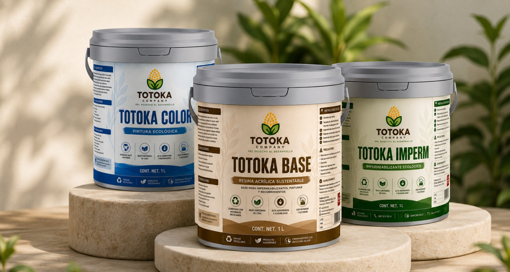
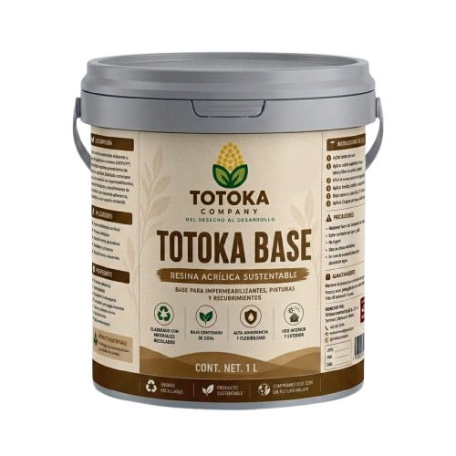
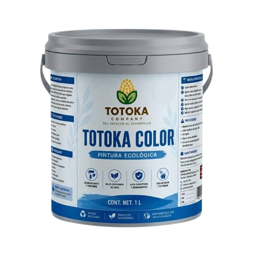
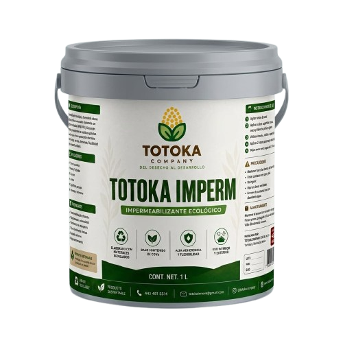
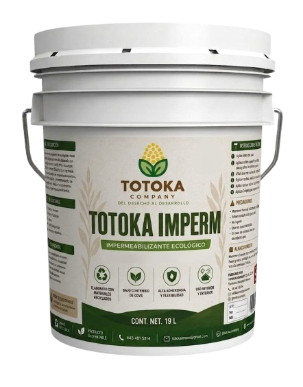

Materiales reciclados
Aprovechamos residuos plásticos y agrícolas.
 TOTOKACompany
TOTOKACompanyProductos
Nuestros productos están elaborados a partir de residuos reciclados y recursos renovables, ofreciendo alto desempeño y menor impacto ambiental.

Aprovechamos residuos plásticos y agrícolas.
Productos funcionales, resistentes y duraderos.
Formulaciones ecológicas amigables con el planeta.
Innovación sostenible para comunidades y el entorno.
Nuestros productos
Conoce nuestra línea de productos ecológicos diseñados para la construcción, impermeabilización y recubrimientos de alto rendimiento.

Resina acrílica elaborada a partir de polímeros reciclados y biocargas agrícolas, diseñada para impermeabilizantes, pinturas y recubrimientos.

Pintura ecológica base agua para aplicaciones arquitectónicas básicas, con excelente cobertura y acabado uniforme.

Impermeabilizante ecológico formulado con materiales reciclados para protección de techos, muros y superficies expuestas.
Disponibles en diferentes tamaños para adaptarnos a cada proyecto.
